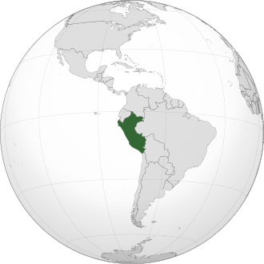
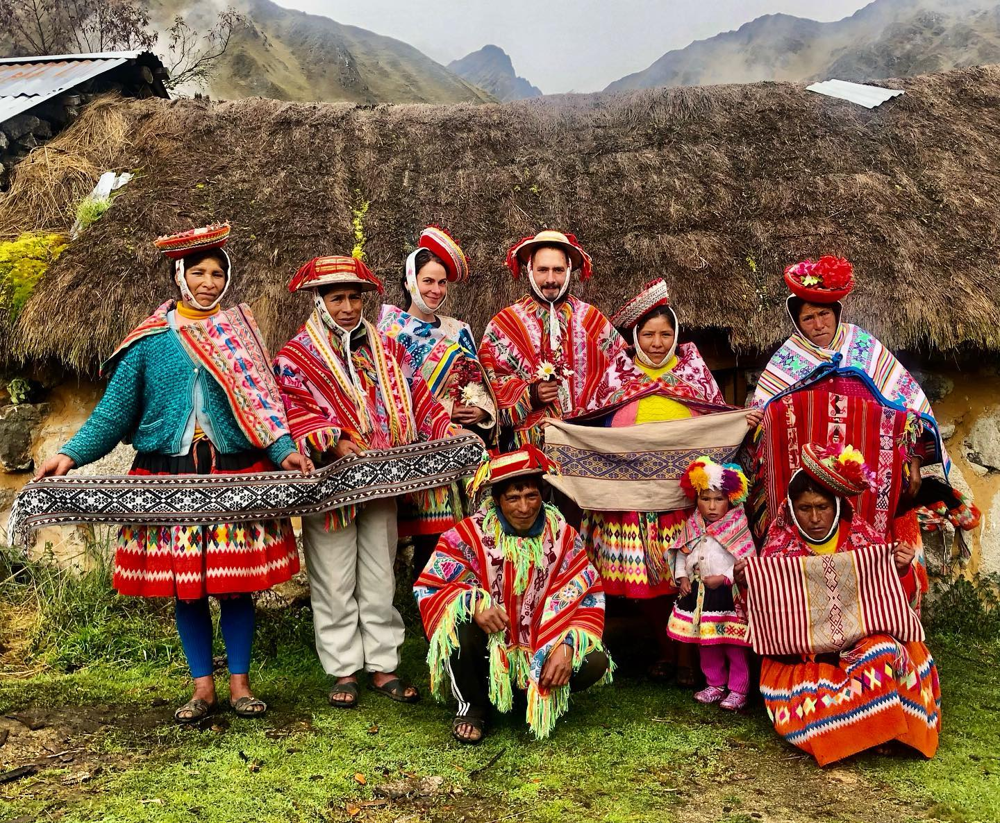
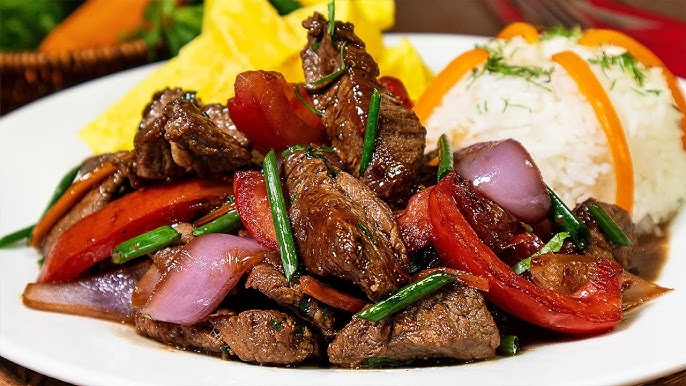
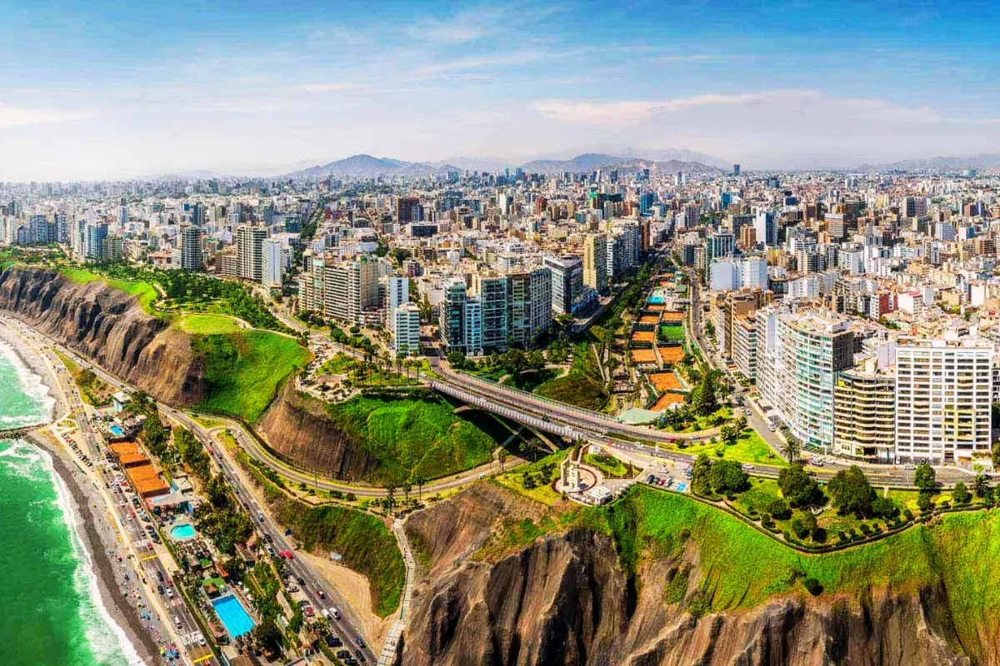
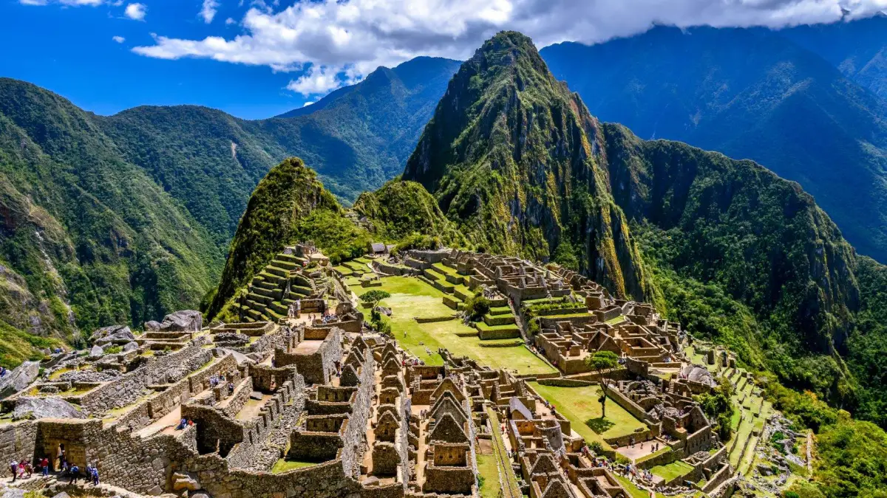

O Peru é o terceiro maior país da América do Sul com uma área de 1.285.216 Km².
O Peru é um país com uma herança cultural riquíssima, resultado da fusão entre tradições indígenas, espanholas e africanas. A civilização inca é uma das mais conhecidas do mundo, e muitos de seus costumes e construções ainda influenciam o país atualmente. Entre as principais manifestações culturais estão as festas tradicionais, como o Inti Raymi, que celebra o solstício de inverno e o deus Sol inca.
A música tradicional peruana é diversa, com destaque para ritmos como a marinera, o huayno e o festejo afroperuano. O artesanato também é uma expressão importante da cultura, com peças feitas em cerâmica, tecidos coloridos e joias de prata.
A gastronomia peruana é considerada uma das melhores do mundo, graças à sua variedade de ingredientes e à fusão de técnicas indígenas, espanholas, africanas e asiáticas. O ceviche, prato feito com peixe cru marinado em suco de limão com cebola roxa e pimenta, é um dos mais famosos.
Outros pratos populares incluem:
- Lomo saltado: carne bovina salteada com legumes, arroz e batatas fritas.
- Ají de gallina: frango desfiado em um creme de pimenta amarela e leite.
- Anticuchos: espetinhos de carne (geralmente coração de boi), muito comuns nas ruas de Lima
O Peru também é conhecido por seus diversos tipos de batata (mais de 3.000 variedades) e milho.
O Peru tem uma população de aproximadamente 34 milhões de pessoas. É um país multicultural, com uma grande diversidade étnica que inclui descendentes de povos indígenas, europeus, africanos e asiáticos. As línguas oficiais é o Espanhol, e a maioria da população vive na costa do Pacífico, especialmente em torno da capital, Lima, que é a maior cidade do país.
- Machu Picchu é uma das Sete Maravilhas do Mundo Moderno e um dos destinos turísticos mais visitados do planeta.
- O Lago Titicaca, compartilhado com a Bolívia, é o lago navegável mais alto do mundo.
- O Peru é o segundo país com maior parte da floresta amazônica, depois do Brasil.
- O país é um dos maiores produtores mundiais de ouro, prata e cobre.
- A moeda oficial é o Sol peruano (PEN).
